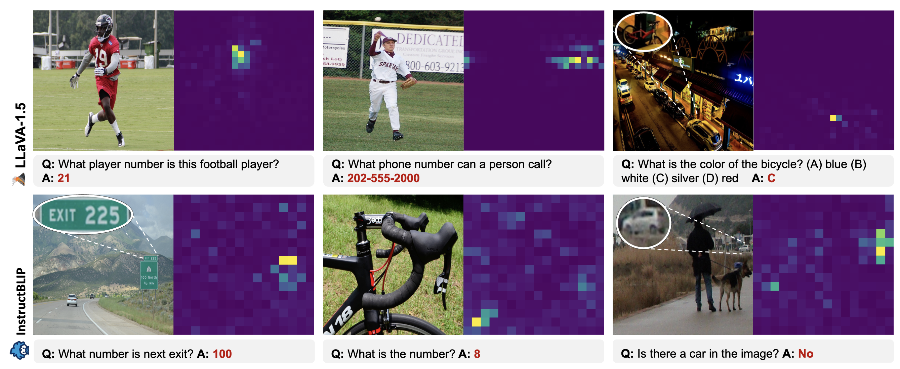
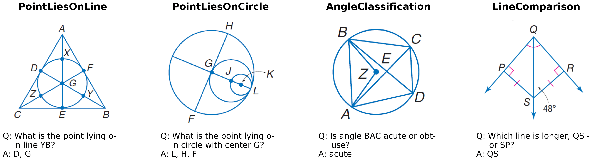
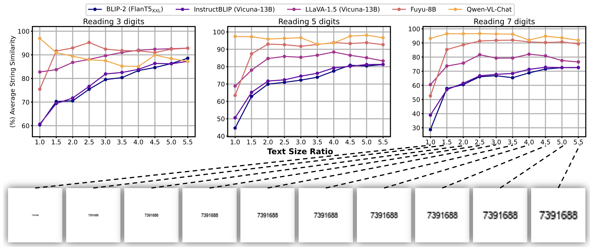
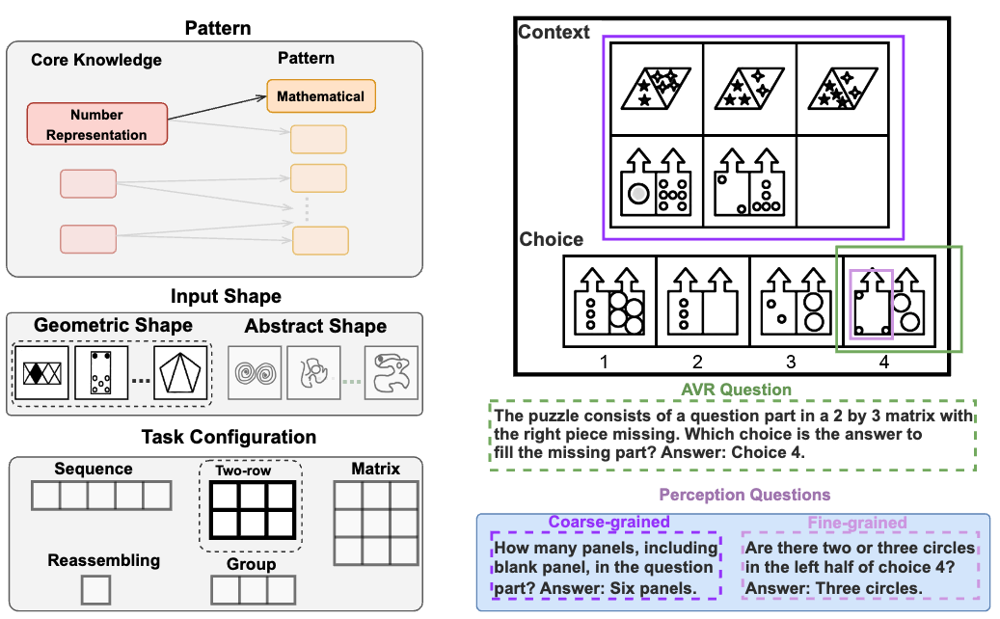

|
Jerry (Jiarui) Zhang
I am a Computer Science Ph.D. student at USC, advised by Willie Neiswanger. My research focuses on multimodal learning, reasoning, and AI for Science. Previously, I received my bachelor's degree in electrical engineering from Tsinghua University. I grew up in Dalian, a beautiful coastal city in China. My Chinese name is 张家瑞.
Email /
CV /
Scholar /
Twitter /
GitHub
|
|
Research
My research focuses on multimodal learning and reasoning, and I'm interested in AI-for-Science.
|
|

|
MLLMs Know Where to Look: Training-free Perception of Small Visual Details with Multimodal LLMs
Jiarui Zhang,
Mahyar Khayatkhoei,
Prateek Chhikara,
Filip Ilievski
ICLR, 2025
arXiv,
GitHub
We show that MLLMs often know where to look but fail to perceive small details, and that attention-guided cropping improves performance without training.
|
|

|
Euclid: Supercharging Multimodal LLMs with Synthetic High-Fidelity Visual Descriptions
Jiarui Zhang
Ollie Liu,
Tianyu Yu,
Jinyi Hu,
Willie Neiswanger,
arXiv, 2024
arXiv,
code,
model & dataset,
demo
Euclid studies geometric low-level visual perception in multimodal LLMs and introduces Geoperception, design-space analyses, and a model family with stronger LLVP abilities.
|
|

|
Exploring Perceptual Limitations of Multimodal LLMs on Small Visual Objects
Jiarui Zhang*,
Jinyi Hu*,
Mahyar Khayatkhoei,
Filip Ilievski,
Maosong Sun
TMLR, 2026
paper,
GitHub
We reveal that object quality, size, distractors, and location independently affect MLLMs' ability to perceive small visual objects.
|
|

|
MARVEL: Multidimensional Abstraction and Reasoning through Visual Evaluation and Learning
Yifan Jiang*,
Jiarui Zhang*
Kexuan Sun*,
Zhivar Sourati,
Kian Ahrabian,
Kaixin Ma,
Filip Ilievski,
Jay Pujara,
NeurIPS D&B Track, 2024
arXiv
A comprehensive benchmark, MARVEL, that evaluates multimodal large language models' abstract reasoning abilities and reveals significant performance gaps between humans and state-of-the-art MLLMs.
|
This website is adapted from here.
|
|